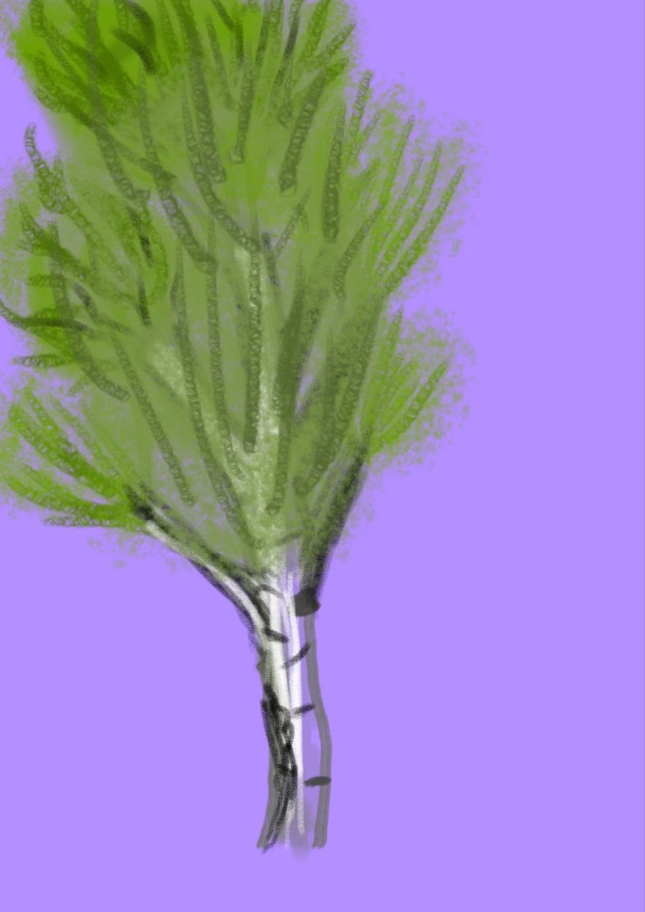

Осика
Осика, яку часто називають тремтячою тополею, є поширеним листяним деревом у Вінницькій області. Її легко впізнати за сірувато-білою корою, яка з віком темніє та набуває глибоких тріщин. Осики можуть досягати висоти від 20 до 30 метрів. Навесні та влітку їхнє листя має яскравий зелений колір, що надає дереву особливої привабливості. Ці дерева відомі своїм швидким ростом, зазвичай збільшуючи висоту на 40-80 сантиметрів щороку. Осика добре пристосована до холодного та сухого клімату і чудово росте в районах із достатньою кількістю сонячного світла, що робить її стійким та адаптивним видом у лісах регіону.